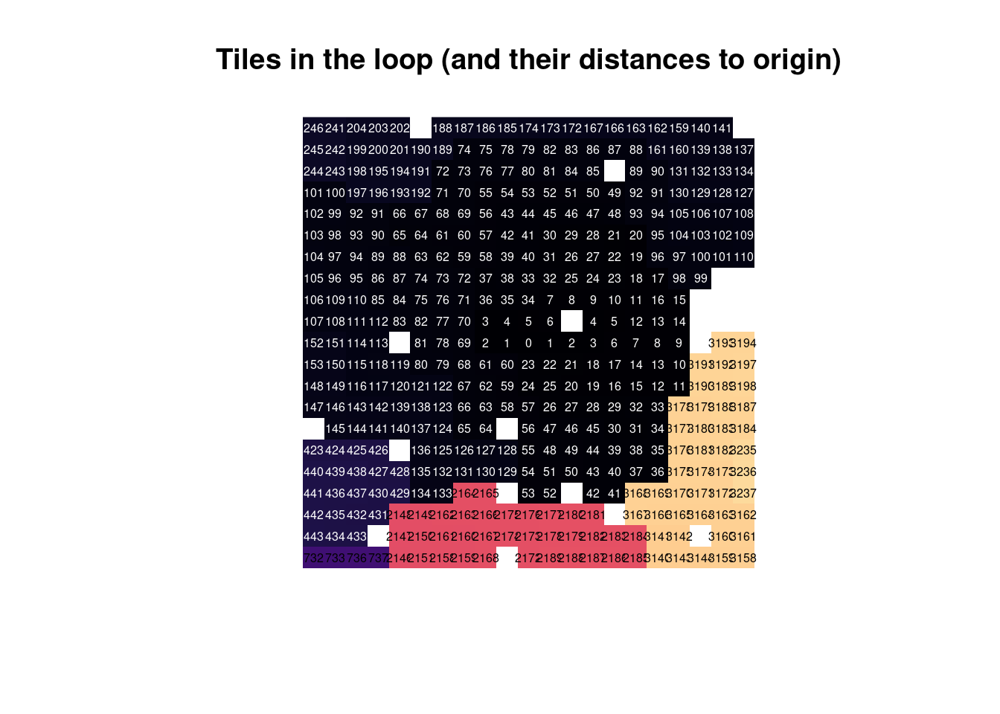
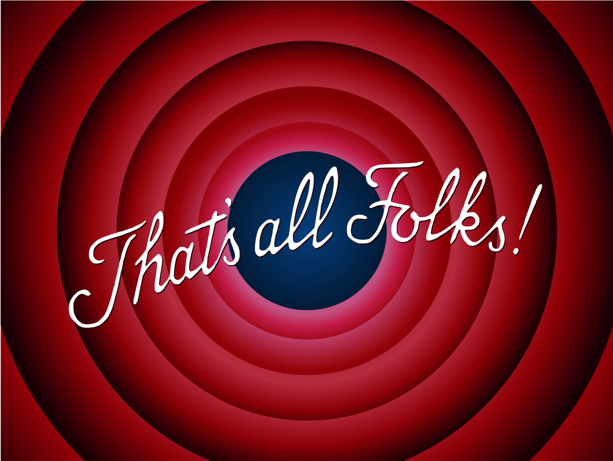

There are a lot of pipes and there is an animal hidden somewhere inside them. Puzzle input is a 2D sketch of all the surface pipes we can see.
| is a vertical pipe connecting north and south.
- is a horizontal pipe connecting east and west.
L is a 90-degree bend connecting north and east.
J is a 90-degree bend connecting north and west.
7 is a 90-degree bend connecting south and west.
F is a 90-degree bend connecting south and east.
. is ground; there is no pipe in this tile.
S is the starting position of the animal; there is a pipe on this tile, but your sketch doesn’t show what shape the pipe has.
Prompt suggests that the animal is inside “one large, continuous loop”. For example, one like this:
.....
.F-7.
.|.|.
.L-J.
.....
Which would have looked like this if the animal had entered through the northwest corner:
.....
.S-7.
.|.|.
.L-J.
.....
Other key facts:
The tile where the animal is doesn’t show its true shape, but it can be inferred from the surrounding pipes.
The pipe with S is assummed to connect back to the pipes that conect to it.
There are many pipes that don’t connect to the main loop.
If you want to get out ahead of the animal, you should find the tile in the loop that is farthest from the starting position. Because the animal is in the pipe, it doesn’t make sense to measure this by direct distance. Instead, you need to find the tile that would take the longest number of steps along the loop to reach from the starting point - regardless of which way around the loop the animal went.
For example, in the following loop:
..F7.
.FJ|.
SJ.L7
|F--J
LJ...
Distances would look like this:
..45.
.236.
01.78
14567
23...
Thus, the farthest point is 8 steps away from the start.
The problem:
Find the single giant loop starting at S. How many steps along the loop does it take to get from the starting position to the point farthest from the starting position?
Dataframe-like data structures don’t seem right for this problem. I’ll probaby have to use 2D matrices and go through them with nested loops (kind of like the messy code I wrote for day 3). There might be a better data structure for approaching this, but unfortunately, I’m not aware of it yet.
(I have a gut feeling that this could be addressed through Object-Oriented Programming? Like, defining each of the pipes as different classes? Anyway, onto the matrices…)
At this point, the rules for identifying connecting pipes should be extended to include scenarios where none of the tiles are marked with S. I’ll define the function is_connected() for this purpose.
horizontally_connecting <-# first element = left, second element=leftlist(c("-", "-"),c("-", "7"),c("-", "J"),c("L", "-"),c("L", "7"),c("L", "J"),c("F", "-"),c("F", "J"),c("F", "7"),c("S", "-"),c("S", "J"),c("S", "7"),c("-", "S"),c("L", "S"),c("F", "S") )vertically_connecting <-# first element = top, second element = bottomlist(c("|", "|"),c("F", "|"),c("7", "|"),c("|", "J"),c("F", "J"),c("7", "J"),c("F", "L"),c("7", "L"),c("|", "L"),c("S", "|"),c("S", "L"),c("S", "J"),c("|", "S"),c("7", "S"),c("F", "S") )is_connected <-function(pair_tiles, direction) {# the logic for identifying connecting pipes depends on the direction we're moving toif (direction %in%c("N", "S")) {return (list(pair_tiles) %in% vertically_connecting) } else {return (list(pair_tiles) %in% horizontally_connecting) }}
Using a named list to give friendly names to directions in the 3x3 matrices:
Now, I should be able to navigate through the pipes by repeatedly executing the following code:
# Example code: not meant to runall_distances <-explore_surroundings(further_away)further_away <-which(all_distances ==max(all_distances, na.rm =TRUE), arr.ind =TRUE)
I’m considering a while loop for this, but I’m not quite sure what the stopping condition should be. Maybe it could stop when it’s about to overwrite a cell that already has a distance value. That would mean we’re going back to a cell we’ve already visited, suggesting the loop has come full circle.
Let’s try doing that. First, we declare the starting conditions:
while (TRUE) { new_distances <-explore_surroundings(further_away)# Stopping conditionif (sum(new_distances > all_distances, na.rm =TRUE) >0) break# Another stopping condition: the amount of NAs is the same (no exploration)if (sum(is.na(new_distances)) ==sum(is.na(all_distances))) break all_distances <- new_distances further_away <-which(all_distances ==max(all_distances, na.rm =TRUE), arr.ind =TRUE)}
Once the code stops, I just need to find the highest value in the all_distances matrix.
max(all_distances, na.rm =TRUE)
[1] 6682
It’s correct! (I almost can’t believe it, given how messy my code is 😅).
Part 2
Now we have to calculate how many tiles are contained within the loop. The definition of being within the loop is quite specific. For example, in the sketch below, the tiles marked with 0 are technically outside the loop.
Any tile that isn’t part of the main loop can count as being enclosed by the loop.
The task is to find how many tiles are enclosed by the loop.
Before trying to solve this, I want to visualize the values in the all_distances matrix. This will help me get a better idea of the loop’s size and shape.
library(plot.matrix)library(viridis)brk <-6000par(mar=c(5.1, 4.1, 4.1, 4.1))svg("all_distances.svg", height=80, width=80)# Code of the plotdistances <-plot( all_distances,border=NA,breaks=brk,na.col="grey",na.cell=FALSE,col=magma(brk), digits=1,text.cell=list(cex=0.5),fmt.cell="%.0f",key=NULL,polygon.key=NULL,axis.col=NULL,axis.row=NULL,xlab=NA, ylab=NA)# Close the graphics devicedev.off()
The output of the code above is a giant SVG image that depicts the full all_distances matrix, highlighting the tiles that are part of the loop (they’re colour-coded based on their distance to the starting tile and they also display the distance value as text on top of them).
The plot with the text is too big to show it on this page (here is the full-size version of the plot), so I’ll display just a section of it below.
i <- position_s[1]j <- position_s[2]plot( all_distances[(i-10):(i+10), (j-10):(j+10)],main="Tiles in the loop (and their distances to origin)",border=NA,breaks=brk,na.col="grey",na.cell=FALSE,col=magma(brk), digits=1,text.cell=list(cex=0.5),fmt.cell="%.0f",key=NULL,polygon.key=NULL,axis.col=NULL,axis.row=NULL,xlab=NA, ylab=NA,asp=1)

And here is a “miniature version” without the text (darker colours represent tiles closer to the origin and white represents tiles that are not part of the loop).
Based on the plot, we can see that the loop is really big and has a complex shape, including many twists and turns.
I’m also curious about how many ‘arms’ or paths branch off from the loop. Are there any that lead to dead-ends and don’t reconnect with the main loop? (In that case, there would be distance values I would have to discard before identifying the tiles enclosed by the loop).
# A tibble: 2 × 2
n_paths n
<dbl> <int>
1 1 1
2 2 6681
There are always only two paths branching off the starting tile, ensuring there are no ‘dead-ends’ in the loop.
Next steps:
Traverse the loop in a counter-clockwise direction, inspecting the tiles to the left of the path. Consider tiles with NA as distance value as “enclosed” by the loop.
After identifying these inner loop cells (and verifying via visual inspection that they actually are within the loop), initiate a ‘contagion’ process. This means marking contiguous non-loop tiles as “enclosed by the loop”.
Implementing my idea for the “base case” (the starting tile S):
The coordinates for ‘the cell to the left’ and ‘the cell to the right’ will vary depending on the direction. E.g. if we go South from the centre tile (2,2 to 3,2), the coordinates of the “cell to the right” are going to be 3,1.
I’ll use the value -1 in the distances matrix to mark the tiles that are enclosed by the loop.
new_i <- inew_j <- jwhile (TRUE) { distances <- all_distances[(new_i-1):(new_i+1), (new_j-1):(new_j+1)]# I'll use the `directions` vector which was declared before to check the cardinal coordinates# Given the order of the list `directions`, this loop will go East firstfor (i_dir inseq_along(directions)) { direction <-names(directions)[i_dir] surr_i <- directions[[i_dir]][1] surr_j <- directions[[i_dir]][2] surr_dist_val <-replace_na(distances[surr_i, surr_j], 0)# Go in the direction of the cell that increments distance by 1if (surr_dist_val - distances[2, 2] ==1) {# mark the tile to the left as "inside" i_left <- to_the_left[[direction]][1] j_left <- to_the_left[[direction]][1]if (is.na(distances[i_left, j_left])) { distances[i_left, j_left] <--1 }# Updating i and j to reflect that we moved new_i <- i + surr_i -2 new_j <- j + surr_j -2break } }# stopping condition: if (distances[2, 2] == all_distances[new_i, new_j]) break all_distances[(i-1):(i+1), (j-1):(j+1)] <- distances i <- new_i j <- new_j}
Counting the tiles that have been marked as inside the loop until now.
sum(all_distances ==-1, na.rm=TRUE)
[1] 390
Visual inspection:
plot( all_distances,main='Tiles inside the loop (before the contagion process)',sub="White = NA / Grey = Part of the loop / Black = enclosed by the loop",border=NA,breaks=c(-1, 1),na.col="grey",na.cell=FALSE,col=magma(4), key=NULL,polygon.key=NULL,axis.col=NULL,axis.row=NULL,xlab=NA, ylab=NA,asp=1)
I’m not correctly handling the case then the loop takes a turn.
Only one of the loop’s ‘arms’ is being traversed, but there are two.
Unfortunately, the time I’ve spent on this problem has exceeded my “time budget” and I’m not even sure that the algorithm I’m implementing will lead to the correct solution, so I’m deciding to stop here.

Source Code
---title: "2023: Day 10"date: 2023-12-10categories: - Rdraft: true---## Setup[The original challenge](https://adventofcode.com/2023/day/10)[My data](input){target="_blank"}## Part 1There are a lot of pipes and there is an animal hidden somewhere inside them. Puzzle input is a 2D sketch of all the surface pipes we can see.- `|` is a vertical pipe connecting north and south.- `-` is a horizontal pipe connecting east and west.- `L` is a 90-degree bend connecting north and east.- `J` is a 90-degree bend connecting north and west.- `7` is a 90-degree bend connecting south and west.- `F` is a 90-degree bend connecting south and east.- `.` is ground; there is no pipe in this tile.- `S` is the starting position of the animal; there is a pipe on this tile, but your sketch doesn't show what shape the pipe has.Prompt suggests that the animal is inside "one large, continuous loop". For example, one like this:```......F-7..|.|..L-J......```Which would have looked like this if the animal had entered through the northwest corner:```......S-7..|.|..L-J......```Other key facts:- The tile where the animal is doesn't show its true shape, but it can be inferred from the surrounding pipes.- The pipe with `S` is assummed to connect back to the pipes that conect to it.- There are many pipes that don't connect to the main loop.> If you want to get out ahead of the animal, you should find the tile in the loop that is farthest from the starting position. Because the animal is in the pipe, it doesn't make sense to measure this by direct distance. Instead, you need to find the tile that would take the longest number of steps along the loop to reach from the starting point - regardless of which way around the loop the animal went.For example, in the following loop:```..F7..FJ|.SJ.L7|F--JLJ...```Distances would look like this:```..45..236.01.781456723...```Thus, the farthest point is 8 steps away from the start.The problem:> Find the single giant loop starting at S. How many steps along the loop does it take to get from the starting position to the point farthest from the starting position?Dataframe-like data structures don't seem right for this problem. I'll probaby have to use 2D matrices and go through them with nested loops (kind of like the messy code I wrote for [day 3](/2023/day/3/)). There might be a better data structure for approaching this, but unfortunately, I'm not aware of it yet.(I have a gut feeling that this could be addressed through Object-Oriented Programming? Like, defining each of the pipes as different classes? Anyway, onto the matrices...)Loading the sketch as a 2D matrix:```{r}library(tidyverse)library(here)sketch <-read_lines(here("2023/day/10/input")) %>%str_split(pattern ="", simplify=TRUE)sketch[1:10, 1:10]```Now, how to find the "big loop"?Idea: create a "twin matrix" with the same dimensions as `sketch`, intially filled with `NA`s, to represent the distances from the origin.```{r}all_distances <-matrix(nrow =dim(sketch)[1],ncol =dim(sketch)[2])```Then, look at the 8 tiles surrounding the starting tile (`S`) to start exploring the `sketch` grid.```{r}position_s <-which(sketch =="S", arr.ind =TRUE)position_s``````{r}i <- position_s[1]j <- position_s[2]surroundings <- sketch[(i-1):(i+1), (j-1):(j+1)]surroundings```Let's create a function that, given the `surroundings` matrix, assigns values of distance to the tiles that are connected to the central tile.First, I'll consider the particular case of the starting tile:```{r}distances <-matrix(nrow =3, ncol =3)distances[2,2] <-0``````{r}south_connecting_pipes <-c("|", "7", "F")west_connecting_pipes <-c("-", "J", "7")east_connecting_pipes <-c("-", "L", "F")north_connecting_pipes <-c("|", "L", "J")if (surroundings[1, 2] %in% south_connecting_pipes) { distances[1,2] <-1}if (surroundings[2, 1] %in% east_connecting_pipes) { distances[2, 1] <-1}if (surroundings[3,2] %in% north_connecting_pipes) { distances[3, 2] <-1}if (surroundings[2, 3] %in% west_connecting_pipes) { distances[2, 3] <-1}distances```I can now copy these local `distances` back to the `all_distances` twin matrix.After that, I could use `which.max(all_distances)` to find the tiles that are further away from the starting tile and still connected to it.Finally, I can repeat the distance assignment process, but this time starting from the tiles identified by `which.max`.Copying the distance values:```{r}all_distances[(i-1):(i+1), (j-1):(j+1)] <- distances```Finding the tiles that are further away from the start and still connected to it:```{r}further_away <-which(all_distances ==max(all_distances, na.rm =TRUE), arr.ind =TRUE)further_away```Let's take the coordinates of these points, explore their surroundings, and then assign distance values to the tiles that are connected to them.To simplify, I'll first calculate the distances for just one of the `further_away` points:```{r}current_tile1 <- further_away[1,]i <- current_tile1[1]j <- current_tile1[2]distances <- all_distances[(i-1):(i+1), (j-1):(j+1)]surroundings <- sketch[(i-1):(i+1), (j-1):(j+1)]surroundings```At this point, the rules for identifying connecting pipes should be extended to include scenarios where none of the tiles are marked with `S`. I'll define the function `is_connected()` for this purpose.```{r is_connected}horizontally_connecting <- # first element = left, second element=left list( c("-", "-"), c("-", "7"), c("-", "J"), c("L", "-"), c("L", "7"), c("L", "J"), c("F", "-"), c("F", "J"), c("F", "7"), c("S", "-"), c("S", "J"), c("S", "7"), c("-", "S"), c("L", "S"), c("F", "S") )vertically_connecting <- # first element = top, second element = bottom list( c("|", "|"), c("F", "|"), c("7", "|"), c("|", "J"), c("F", "J"), c("7", "J"), c("F", "L"), c("7", "L"), c("|", "L"), c("S", "|"), c("S", "L"), c("S", "J"), c("|", "S"), c("7", "S"), c("F", "S") )is_connected <- function(pair_tiles, direction) { # the logic for identifying connecting pipes depends on the direction we're moving to if (direction %in% c("N", "S")) { return (list(pair_tiles) %in% vertically_connecting) } else { return (list(pair_tiles) %in% horizontally_connecting) }}```Using a named list to give friendly names to directions in the 3x3 matrices:```{r}directions <-list("S"=c(3, 2),"N"=c(1, 2),"E"=c(2, 3),"W"=c(2, 1))```Now let's use this function to calculate the distances surrounding our current location (`current_tile1`).```{r}central_tile <- surroundings[2,2]for (i_dir inseq_along(directions)) { direction <-names(directions)[i_dir] surr_i <- directions[[i_dir]][1] surr_j <- directions[[i_dir]][2] cur_surr_tile <- surroundings[surr_i, surr_j]if (is.na(distances[surr_i, surr_j])) {# NA in distance means a comparation hasn't been doneif (direction %in%c("S", "E")) tile_pair <-c(central_tile, cur_surr_tile)if (direction %in%c("N", "W")) tile_pair <-c(cur_surr_tile, central_tile) connected <-is_connected(tile_pair, direction)if (connected) { distances[surr_i, surr_j] <- distances[2,2] +1 } }} all_distances[(i-1):(i+1), (j-1):(j+1)] <- distances```So far, the code is working as expected.Now it's time to organise the code into functions. I need to start with a function that does the following:- Receives `sketch`, `all_distances` and a set of coordinates (the output of `which.max`) as inputs.- Explores the surroundings of those coordinates.- Applies the previously described logic to calculate distance values for tiles connected to those coordinates.- Return an updated version of the `all_distances` with the values from the previous step.The set of coordinates will be assummed to be a matrix, as per the output of `which(all_distances == max(all_distances, na.rm = TRUE), arr.ind = TRUE)`.```{r}explore_surroundings <-function( coordinates,this_sketch = sketch,these_distances = all_distances) {for (i_coord inseq_along(coordinates[,"row"])) { i <- coordinates[i_coord, "row"] j <- coordinates[i_coord, "col"] surroundings <- this_sketch[(i -1):(i +1), (j -1):(j +1)] distances <- these_distances[(i -1):(i +1), (j -1):(j +1)] central_tile <- surroundings[2, 2]for (i_dir inseq_along(directions)) { direction <-names(directions)[i_dir] surr_i <- directions[[i_dir]][1] surr_j <- directions[[i_dir]][2] cur_surr_tile <- surroundings[surr_i, surr_j]if (is.na(distances[surr_i, surr_j])) {# NA in distance means a comparation hasn't been doneif (direction %in%c("S", "E")) tile_pair <-c(central_tile, cur_surr_tile)if (direction %in%c("N", "W")) tile_pair <-c(cur_surr_tile, central_tile) connected <-is_connected(tile_pair, direction)if (connected) { distances[surr_i, surr_j] <- distances[2, 2] +1 } } } these_distances[(i -1):(i +1), (j -1):(j +1)] <- distances }return(these_distances) }```Now, I should be able to navigate through the pipes by repeatedly executing the following code:```{r}#| eval: false # Example code: not meant to runall_distances <-explore_surroundings(further_away)further_away <-which(all_distances ==max(all_distances, na.rm =TRUE), arr.ind =TRUE)```I'm considering a `while` loop for this, but I'm not quite sure what the stopping condition should be. Maybe it could stop when it's about to overwrite a cell that already has a distance value. That would mean we're going back to a cell we've already visited, suggesting the loop has come full circle.Let's try doing that. First, we declare the starting conditions:```{r}further_away <-which(sketch =="S", arr.ind =TRUE)all_distances <-matrix(nrow =dim(sketch)[1],ncol =dim(sketch)[2])all_distances[further_away[1, "row"], further_away[1, "col"]] <-0```Now onto the loop itself:```{r}while (TRUE) { new_distances <-explore_surroundings(further_away)# Stopping conditionif (sum(new_distances > all_distances, na.rm =TRUE) >0) break# Another stopping condition: the amount of NAs is the same (no exploration)if (sum(is.na(new_distances)) ==sum(is.na(all_distances))) break all_distances <- new_distances further_away <-which(all_distances ==max(all_distances, na.rm =TRUE), arr.ind =TRUE)}```Once the code stops, I just need to find the highest value in the `all_distances` matrix.```{r}max(all_distances, na.rm =TRUE)```It's correct! (I almost can't believe it, given how messy my code is 😅).## Part 2Now we have to calculate how many tiles are contained *within* the loop. The definition of being within the loop is quite specific. For example, in the sketch below, the tiles marked with `0` are technically *outside the loop*.```...........S------7..|F----7|..||OOOO||..||OOOO||..|L-7F-J|..|II||II|..L--JL--J...........```> Any tile that isn't part of the main loop can count as being enclosed by the loop.The task is to find how many tiles are enclosed by the loop.Before trying to solve this, I want to visualize the values in the `all_distances` matrix. This will help me get a better idea of the loop's size and shape.```{r}#| output: falselibrary(plot.matrix)library(viridis)brk <-6000par(mar=c(5.1, 4.1, 4.1, 4.1))svg("all_distances.svg", height=80, width=80)# Code of the plotdistances <-plot( all_distances,border=NA,breaks=brk,na.col="grey",na.cell=FALSE,col=magma(brk), digits=1,text.cell=list(cex=0.5),fmt.cell="%.0f",key=NULL,polygon.key=NULL,axis.col=NULL,axis.row=NULL,xlab=NA, ylab=NA)# Close the graphics devicedev.off()```The output of the code above is a giant SVG image that depicts the full `all_distances` matrix, highlighting the tiles that are part of the loop (they're colour-coded based on their distance to the starting tile and they also display the distance value as text on top of them).The plot with the text is too big to show it on this page (here is the [full-size version of the plot](all_distances.svg)), so I'll display just a section of it below. ```{r}i <- position_s[1]j <- position_s[2]plot( all_distances[(i-10):(i+10), (j-10):(j+10)],main="Tiles in the loop (and their distances to origin)",border=NA,breaks=brk,na.col="grey",na.cell=FALSE,col=magma(brk), digits=1,text.cell=list(cex=0.5),fmt.cell="%.0f",key=NULL,polygon.key=NULL,axis.col=NULL,axis.row=NULL,xlab=NA, ylab=NA,asp=1)```And here is a "miniature version" without the text (darker colours represent tiles closer to the origin and white represents tiles that are not part of the loop).```{r}plot( all_distances,main=NULL,border=NA,breaks=brk,na.col="grey",na.cell=FALSE,col=magma(brk), key=NULL,polygon.key=NULL,axis.col=NULL,axis.row=NULL,xlab=NA, ylab=NA,asp=1)```Based on the plot, we can see that the loop is really big and has a complex shape, including many twists and turns.I'm also curious about how many 'arms' or paths branch off from the loop. Are there any that lead to dead-ends and don't reconnect with the main loop? (In that case, there would be distance values I would have to discard before identifying the tiles enclosed by the loop).```{r}distances_values <-1:max(all_distances, na.rm =TRUE)n_tiles_distance <-function(distance) {return(sum(all_distances == distance, na.rm=TRUE))}tibble(distances = distances_values,n_paths =map_dbl(distances, n_tiles_distance)) %>%count(n_paths)```There are always only two paths branching off the starting tile, ensuring there are no 'dead-ends' in the loop.Next steps:- Traverse the loop in a counter-clockwise direction, inspecting the tiles to the left of the path. Consider tiles with `NA` as distance value as "enclosed" by the loop.- After identifying these inner loop cells (and verifying via visual inspection that they actually are within the loop), initiate a 'contagion' process. This means marking contiguous non-loop tiles as "enclosed by the loop".Implementing my idea for the "base case" (the starting tile `S`):```{r}starting_position <-which(all_distances ==0, arr.ind =TRUE)i <- starting_position[1, "row"]j <- starting_position[1, "col"]directions <-list("S"=c(3, 2),"N"=c(1, 2),"W"=c(2, 1),"E"=c(2, 3))```The coordinates for 'the cell to the left' and 'the cell to the right' will vary depending on the direction. E.g. if we go South from the centre tile (2,2 to 3,2), the coordinates of the "cell to the right" are going to be 3,1.```{r}to_the_right <-list("S"=c(3, 1),"N"=c(1, 3),"E"=c(3, 3),"W"=c(1, 1))to_the_left <-list("S"=c(3, 3),"N"=c(1, 1),"E"=c(1, 3),"W"=c(3, 1))```I'll use the value -1 in the distances matrix to mark the tiles that are enclosed by the loop.```{r}new_i <- inew_j <- jwhile (TRUE) { distances <- all_distances[(new_i-1):(new_i+1), (new_j-1):(new_j+1)]# I'll use the `directions` vector which was declared before to check the cardinal coordinates# Given the order of the list `directions`, this loop will go East firstfor (i_dir inseq_along(directions)) { direction <-names(directions)[i_dir] surr_i <- directions[[i_dir]][1] surr_j <- directions[[i_dir]][2] surr_dist_val <-replace_na(distances[surr_i, surr_j], 0)# Go in the direction of the cell that increments distance by 1if (surr_dist_val - distances[2, 2] ==1) {# mark the tile to the left as "inside" i_left <- to_the_left[[direction]][1] j_left <- to_the_left[[direction]][1]if (is.na(distances[i_left, j_left])) { distances[i_left, j_left] <--1 }# Updating i and j to reflect that we moved new_i <- i + surr_i -2 new_j <- j + surr_j -2break } }# stopping condition: if (distances[2, 2] == all_distances[new_i, new_j]) break all_distances[(i-1):(i+1), (j-1):(j+1)] <- distances i <- new_i j <- new_j}```Counting the tiles that have been marked as inside the loop until now.```{r}sum(all_distances ==-1, na.rm=TRUE)```Visual inspection:```{r}plot( all_distances,main='Tiles inside the loop (before the contagion process)',sub="White = NA / Grey = Part of the loop / Black = enclosed by the loop",border=NA,breaks=c(-1, 1),na.col="grey",na.cell=FALSE,col=magma(4), key=NULL,polygon.key=NULL,axis.col=NULL,axis.row=NULL,xlab=NA, ylab=NA,asp=1)```After looking carefully at [the full-size visualisation](all_distances_part2.svg), it seems there are two issues:1. I'm not correctly handling the case then the loop takes a turn.2. Only one of the loop's 'arms' is being traversed, but there are two.Unfortunately, the time I've spent on this problem has exceeded my "time budget" and I'm not even sure that the algorithm I'm implementing will lead to the correct solution, so I'm deciding to stop here.
{kind=link}
{kind=link}